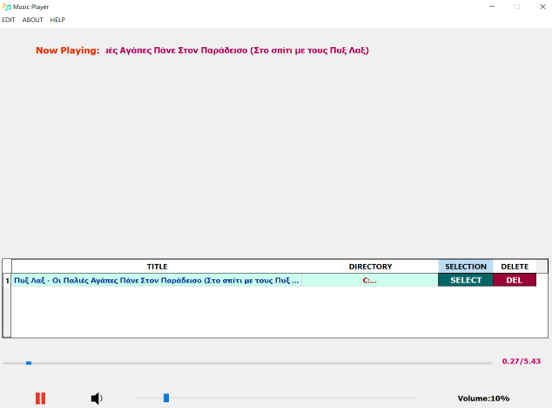
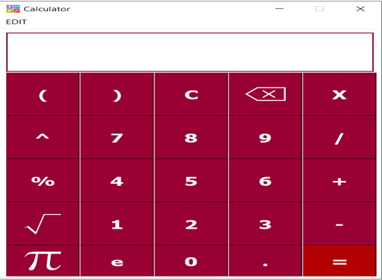
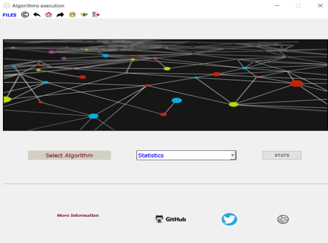

Repositories


Releases
Music Player

This is a music player project designed in Qt by Nastos Vasileios and Konstantinos Sakkas (Informatics and Telecommunications department located in Arta Greece).All Rights Reserved!!! Music Player With Music Player you can download your own songs - videos (.mp3, .mp4) and by integrating them in our application you will no longer need to look for them on your computer as they will be permanently stored in our application, with the PlayList we have the songs - videos change by themselves while pressing the button of the random order now everything plays in random order. All mp4 files are viewed directly through our application while then through PlayNow you are informed about which song is playing. Another advantage is that if you want to make a change to any of your files through the Directory it is immediately where your file is. Finally in About you can find the functionability of the keys for even easier use. Try it now !!!
NOTE!!!In order to run the App please download LAV FILTERS 0.74.1->https://www.free-codecs.com/lav_filters_download.htm
Development Team:
Vassilis Nastos - Software Developer
Konstantinos Sakkas - Hardware Developer and Web Designer
Department of Informatics & Telecommunications - University of Ioannina (Arta) Laboratory of Electronics and Telecommunications.Cfg calculator

With the calculator you can do some basic calculations like adding,subtraction,dividing,multipling,find modulo of a number,find square of a number,using numbers like e which is number 2.71 and pi 3.1415.Also the results of every calculation stored in a second page board,and you can save them in a comma separated value file.
In order to install the calculator
- Download the zip file
- Extract it in a folder on your Desktop
- Open the folder and run the .exe file,which is located inside the zip folder
- Enjoy the App,hope you like it!!!!!
Development Team:
Vassilis Nastos - Software Developer
Konstantinos Sakkas - Hardware Developer and Web Designer
Department of Informatics & Telecommunications - University of Ioannina (Arta) Laboratory of Electronics and Telecommunications.Graph Coloring App

Algorithms Used
- First Fit
- DSatur
- RLF
- BackTracking DSatur
Development Team:
Vassilis Nastos - Software Developer
Department of Informatics & Telecommunications - University of Ioannina (Arta) Laboratory of Electronics and Telecommunications.